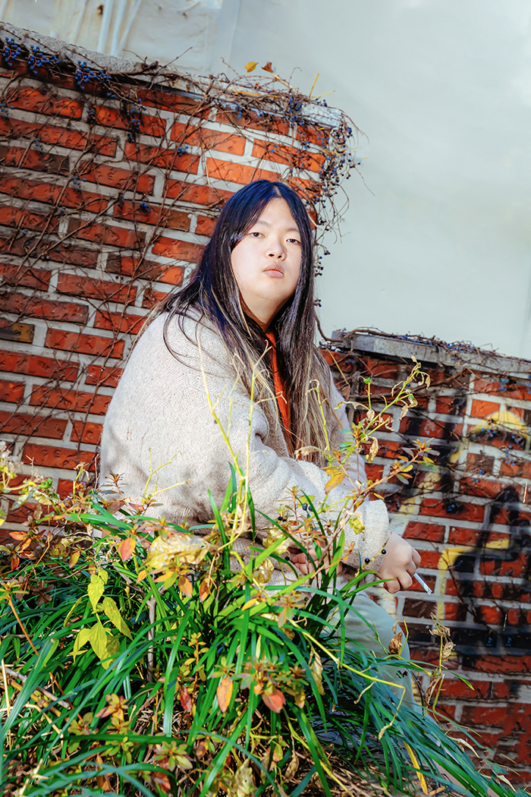

키라라 짱!
- 키라라 그단공
- 키라라는 누구?
- 키라라가 짱인 이유
키라라는 누구?

한국의 전자음악가. 서울, 홍대를 기반으로 활동하고 있다. 2014년 첫 EP <cts1>으로 데뷔한 이래 4장의 정규앨범, 6장의 EP, 2장의 리믹스 컴필레이션,
2장의 라이브앨범을 발매하였다[10][11].
서울뿐만 아니라 부산, 대구 등 지방에서도 활발한 공연 활동을 이어가고 있으며, 펜타포트 락 페스티벌, DMZ 피스트레인 뮤직 페스티벌,
서울인기 등 다양한 규모의 국내 음악 페스티벌과 Primavera Pro, SXSW 등의 해외 페스티벌에서 공연한 경력을 보유하고 있다. 2017년 제 14회 한국대중음악상에서 정규 2집 앨범
<moves>로 최우수 댄스&일렉트로닉 음반상을 수상하였다.
이외에도 다양한 협업이나 대중매체 출연, 자체 컨텐츠 제작 등 종횡무진 활약하며 발매하는 앨범마다 평단의 좋은 평가를
받고 있는, 2010년대 한국 전자음악계에서 독보적인 위치를 점하고 있는 음악가다.